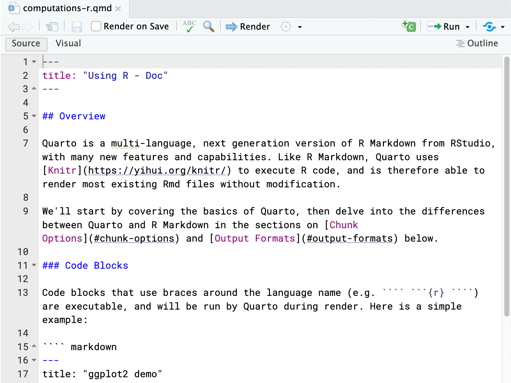
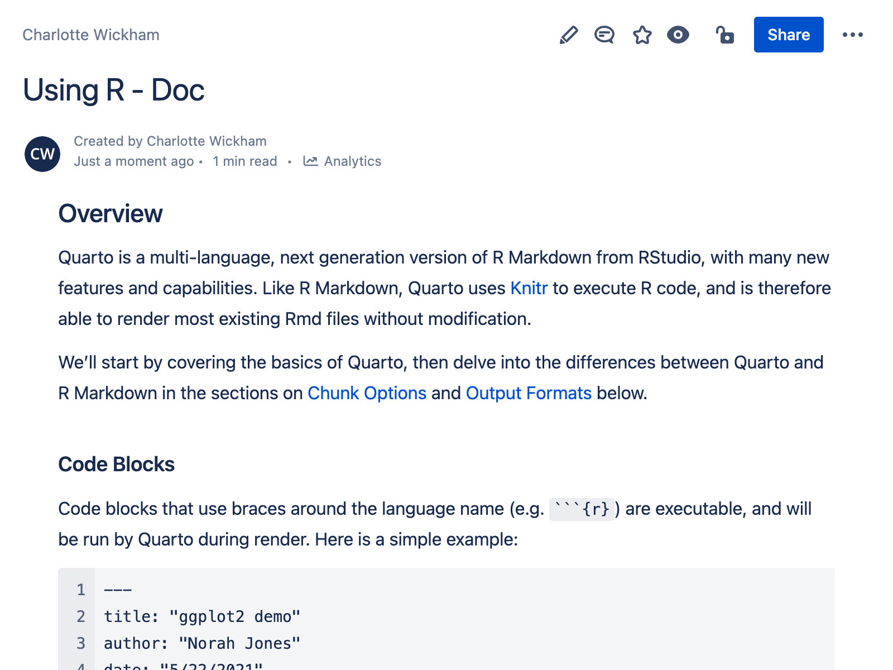
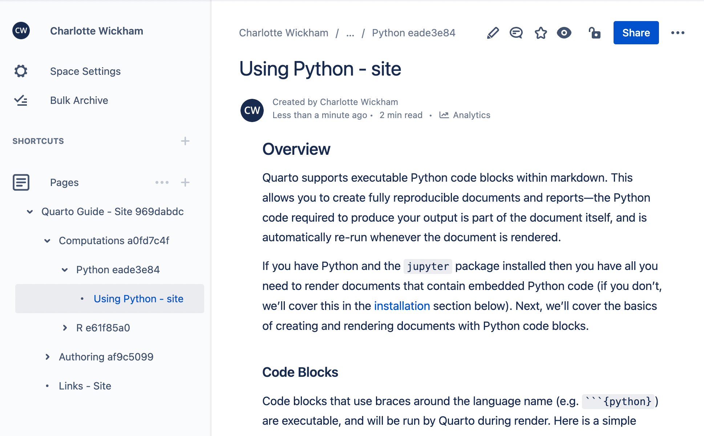
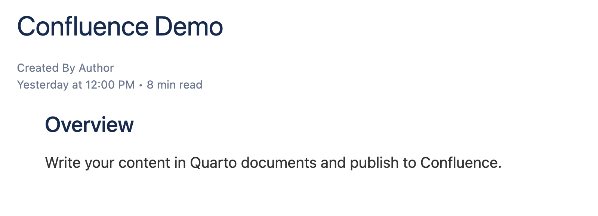
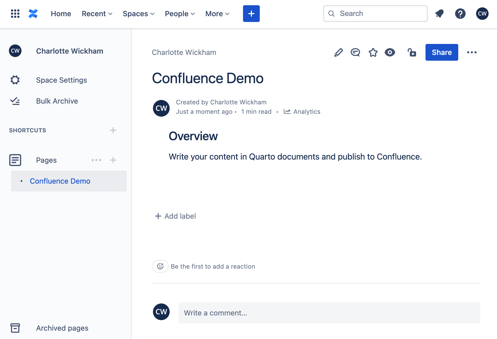
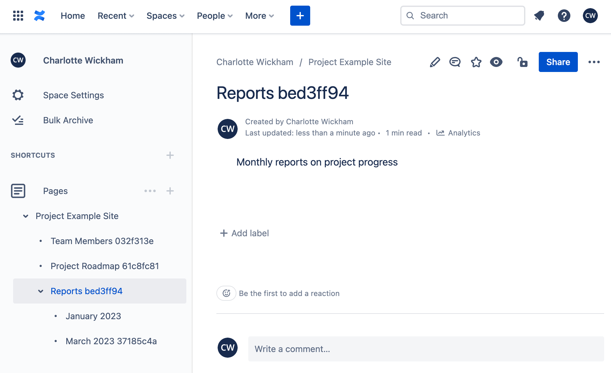
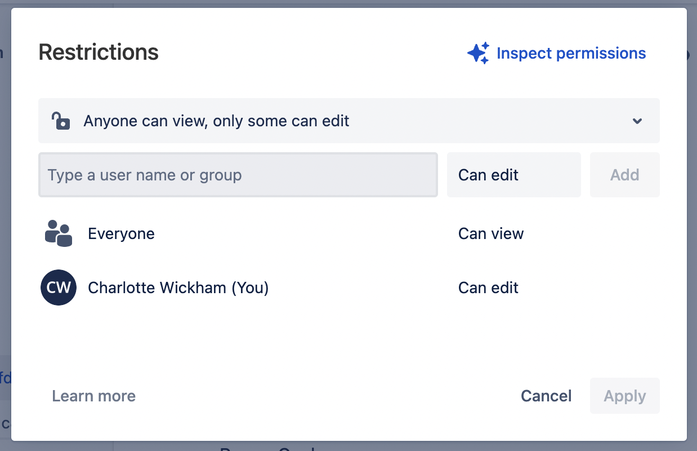

Confluence
Overview
Atlassian Confluence is a publishing platform for supporting team collaboration. Confluence has a variety of hosting options which include both free and paid subscription plans.
Publishing is currently limited to Confluence Cloud. We do not yet support publishing to Confluence Server or Confluence Data Center.
Quarto provides support for publishing individual documents, as well as projects composed of multiple documents, into Confluence Spaces.



Managing Confluence content with Quarto allows you to author content in Markdown, manage that content with your usual version control tools like Git and GitHub, and leverage Quarto’s tools for including computational output.
The next section, Confluence Publishing Basics, walks through the process of publishing a single page to Confluence, including how to set up your Confluence account in Quarto, and how to specify a destination for your document in your Confluence Space.
Before you use Confluence Publishing for your own project you’ll want to read the remaining sections on this page:
Publishing Projects describes how to publish a collection of documents, including how your project structure translates to the structure of pages in your Confluence Space.
Publishing Workflow describes the model for making updates to Confluence pages published from Quarto, including the page permissions that are set when you publish from Quarto.
Authoring for Confluence describes some of the differences between authoring for Confluence and authoring for a Quarto website.
Publishing Settings covers how to manage your publishing settings.
Publishing Quarto documents to a public Confluence space will make the content of those documents public. It is your responsibility to understand the permissions of your Confluence Space and verify your publishing destination to protect against any sensitive or confidential content from being made publicly available.
Confluence Publishing Basics
To demonstrate the process of publishing to Confluence, we’ll take a single document, confluence-demo.qmd, and publish it as a page to a Confluence space. Here’s the contents of confluence-demo.qmd:
---
title: Confluence Demo
format: confluence-html
---
## Overview
Write your content in Quarto documents and publish to Confluence.Notice that the format is set to confluence-html in the document YAML. This allows the local preview of the document to mimic the eventual appearance on Confluence. You can preview your document locally as you would any other Quarto document, by using the Render command in VS Code and RStudio, or by using quarto preview from the command line:
Terminal
quarto preview confluence-demo.qmdThe result of previewing confluence-demo.qmd locally is shown below:

The preview attempts to provide an accurate idea of how your content will look. However, some items in the preview are merely placeholders, like the publishing date, author, and read time in the header. When the document is published to Confluence, these items will be generated by Confluence.
To publish a document to Confluence use quarto publish confluence followed by the file name:
Terminal
quarto publish confluence confluence-demo.qmdUnless you’ve published to Confluence before, you’ll be prompted to set up an account and select a destination for your page.
Setting Up Your Account
When you publish to Confluence for the first time, you’ll be prompted to set up a Confluence account in Quarto. To prepare, log in to Confluence, and navigate to the space, or page within a space, which you wish to publish to.
You’ll first be prompted for your Confluence Domain. This is the first part of the URL to the Confluence page you wish to publish to. For example:
Terminal
? Confluence Domain: ›
❯ e.g. https://mydomain.atlassian.net/Next, you’ll be asked to enter the Email Address for the account used in this Confluence Domain (if you are unsure, look at your account profile on Confluence):
Terminal
? Confluence Account Email: › Finally, you’ll be asked for an API Token:
Terminal
? Confluence API Token: ›
❯ Create an API token at https://id.atlassian.com/manage/api-tokensConfluence API Tokens are specific to your account. You’ll need to create a token, copy, and then paste it into this prompt. For more information on Access Tokens please see the Confluence Documentation on API Tokens.
Quarto saves this account information (domain, email and token) so it can be used for future calls to quarto publish confluence. The final prompt will ask you to select a destination for your page.
Selecting a Destination
Pages in Confluence are arranged in a hierarchy: every page has a parent. When you publish from Quarto to Confluence you’ll be asked to specify the parent for your page by providing its URL:
Terminal
? Space or Parent Page URL: ›
❯ Browse in Confluence to the space or parent, then copy the URLIf you want your page to be at the top level of your space, specify the space itself, e.g.:
https://domain.atlassian.net/wiki/spaces/ABBROtherwise, specify the URL for the parent page, e.g.:
https://domain.atlassian.net/wiki/spaces/ABBR/pages/123456Once the destination is specified, Quarto will render the page for publishing, publish it to Confluence, and open a browser to view the published page.
An example of the published version of confluence-demo.qmd is shown below:

In the sidebar navigation this page is listed at the top level under Pages because the destination was set to the space URL.
Publishing Projects
To publish a collection of documents, organize your documents in a Quarto project, and use the confluence project type. Here’s a minimal _quarto.yml file for a Confluence project:
_quarto.yml
project:
type: confluenceInclude this file in a project directory, then arrange your .qmd or .ipynb documents into whatever hierarchy you want to use for publishing. For example:
_quarto.yml
index.qmd
team.qmd
projects/
planning.qmd
retrospectives.qmdAlternatively, to get started with a template project in a new directory, use quarto create:
Terminal
quarto create project confluenceAs with documents, you can preview your project using the Render command in VS Code and RStudio, or by using quarto preview from the command line:
Terminal
quarto previewThe project preview produces an HTML website with navigation automatically added to the sidebar. This navigation is for convenience, the navigation for the published pages will be handled internally by Confluence.
The project preview attempts to style your content as it will appear on Confluence, however, you may notice some differences in appearance.
To publish your project run quarto publish confluence from your project folder:
Terminal
quarto publish confluence You’ll be walked through the same steps as publishing a single document, setting up an account, if needed, and selecting a destination for your project on Confluence, before publishing your project to Confluence.
Project Structure
The hierarchy of documents inside folders in your project will be respected in the publishing process. Confluence’s concept of folders is that pages can have children, so your folders will be represented by pages in Confluence.
When a project is published, a single page is created in Confluence to hold it. Documents at the top level of the project are published as pages nested under this project page. Folders inside the project are represented by a page, and any documents (or other folders) inside the folder are represented as pages nested under the folder page.
As an example, consider the following project structure:
example-project/
├── _quarto.yml
├── project-roadmap.qmd
├── reports-folder
│ ├── 2023-01.qmd
│ └── 2023-03.qmd
└── team-members.qmdThe Confluence structure resulting from publishing this project to the top level of the space is shown below:
The titles used in the Confluence sidebar navigation are taken from the page and project title, as specified in the document YAML and _quarto.yml respectively, and generated from the folder name for folders. Quarto may add some additional characters to meet the Confluences requirement that every page in a space has a unique name.
index.qmd
Pages in Confluence that represent folders will have no content unless an index.qmd is found inside the folder. If an index.qmd file exists its content will populate the folder page. For example, consider the following index.qmd:
index.qmd
---
title: Reports
---
Monthly reports on project progressAdding this to the folder reports-folder and re-publishing the site, changes the name of the page representing this folder to “Reports” and adds this contents to the page.

Publishing Workflow
In Confluence, many people are able to make direct edits to pages. However, managing your content from Quarto requires a shift in perspective: edits to pages are made only in the Quarto project, and only one account should publish those changes to Confluence.
Publishing to Confluence is a one-way street: there is no way to bring back content edits from Confluence to your Quarto project. Edits that are made on Confluence will be overwritten next time the page is published from Quarto. Updating a page requires editing the document in Quarto, and rerunning:
Terminal
quarto publish confluence To help avoid a situation where someone inadvertently edits a page being managed in Quarto, the permissions for pages are set when you publish so everyone with access to the space can view the page, but only you, the publisher, can edit the page.

Permission to edit the page includes publishing updates, so any updates to a page need to be published from the same account as the original publish.
We attempt to detect if you are publishing to a destination where you do not have control over page permissions and you’ll receive a warning. You may proceed with the publish, but any page you publish can be both viewed and edited by anyone with access to the space.
If you delete a page on Confluence, and republish it from Quarto, you’ll see the error:
ERROR: API Error: 404 - Not FoundThis occurs because Quarto stores and reuses the location of your page on Confluence in _publish.yml. If the page is deleted on Confluence, this location will no longer exist. To solve the problem, delete the corresponding entry in _publish.yml, and publish again. You’ll then be prompted to set the destination. You can read more about _publish.yml in the Publishing Settings section.
Publishing Settings
Once you have published to Confluence, you might be interested in understanding how to manage your publishing and account settings.
_publish.yml
The _publish.yml file is used to specify the publishing destination. This file is automatically created (or updated) whenever you execute the quarto publish command, and is located within the project or document directory.
The service, id, and URL of the published content is specified in _publish.yml. For example:
- source: project
confluence:
- id: "5f3abafe-68f9-4c1d-835b-9d668b892001"
url: "https://myteam.atlassian.net/wiki/spaces/TEAMSPACE/pages/123456/Plan"The next time you publish the same document or project, the _publish.yml file will be used to provide account and space information so that you are not prompted for this information again.
If you have an existing Confluence Space that you want to publish to, you should manually create a _publish.yml file that looks like the example above, but with the appropriate id and url values for your document.
Account information is not stored in _publish.yml, so it is suitable for checking in to version control and being shared by multiple publishers.
Account Management
You can list and remove saved Confluence accounts using the quarto publish accounts command:
$ quarto publish accounts
? Manage Publishing Accounts
❯ ✔ Confluence: jj@posit.co
✔ Netlify: jj@posit.co
❯ Use the arrow keys and spacebar to specify
accounts you would like to remove. Press
Enter to confirm the list of accounts you
wish to remain available.